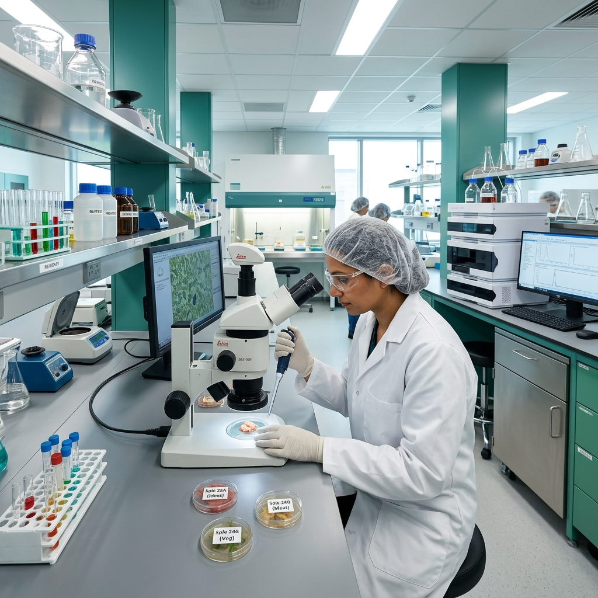
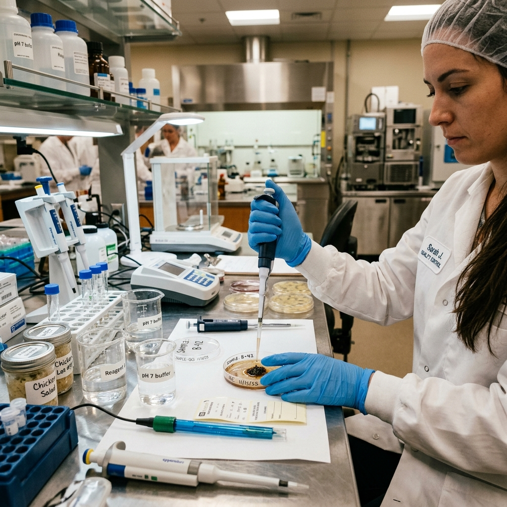

Aqib Nawaz | Food Science & Technology | Rahim Yar Khan
A comprehensive overview of food safety regulations, industry audits, and quality control measures implemented during my tenure at PFA.

Key responsibilities and framework of the Punjab Food Authority.
Enforcement of food safety and quality standards across the province, ensuring safe consumption.
Rigorous auditing, licensing, and sampling protocols for all food-related businesses.
Monitoring and regulating a vast network of food operators in the Rahim Yar Khan district.
To ensure the availability of safe, wholesome, and hygienic food for all citizens.
Core areas of inspection and major industrial audits conducted.
Rahim Yar Khan Operations Department
During my comprehensive internship, I was deeply involved in the daily operations of the food safety teams. My primary objectives included hands-on field inspections, laboratory testing, and understanding the administrative workflow of a major regulatory body.

Standard operating procedures for qualitative and quantitative food analysis.
Brix analysis, polarization, and moisture content verification in local sugar mills.
TDS, pH, microbial contamination, and heavy metal screening for RO plants.
Lactometer reading, adulteration checks (urea, starch, formalin), and fat percentage.
Free fatty acids (FFA), peroxide value, and rancidity checks in edible oils.
Swab testing of food contact surfaces and worker hygiene compliance.
Strategic recommendations based on field observations.
Implement fully digital inspection forms and cloud-based data tracking to reduce paperwork and increase transparency.
Mandate basic Hazard Analysis Critical Control Point (HACCP) training for all medium-to-large scale food handlers.
Continuous capacity building and modern equipment training for existing Food Safety Officers.
Public-facing QR codes on PFA licenses allowing consumers to instantly verify a restaurant's latest inspection status.
This internship bridged the gap between academic theory and practical enforcement.
Working alongside dedicated professionals at PFA Rahim Yar Khan significantly enhanced my understanding of food safety legislation, quality assurance protocols, and the complexities of the local food industry. It instilled a strong sense of responsibility regarding public health and equipped me with the practical auditing and analytical skills necessary for a successful career in Food Science and Technology.